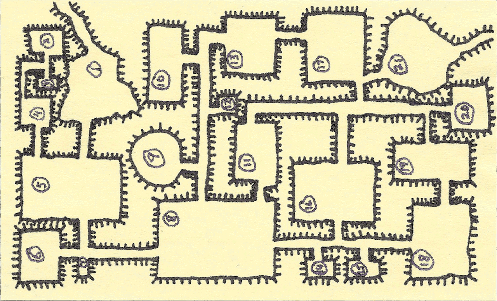

Recent Reading: Kim Harrison
Black Magic Sanction, by Kim Harrison, copyright 2010. Volume 8 of the Hollows series, featuring Rachel Morgan.
Random musings on books, code, and tabletop games.
Black Magic Sanction, by Kim Harrison, copyright 2010. Volume 8 of the Hollows series, featuring Rachel Morgan.
Victory Conditions, by Elizabeth Moon, copyright 2008. Fifth in the Vatta's War series.
2011-03-31
2011-04-09 02:57:39
#1: 2009-12-04 — Shipwrecks, Savages, & Giant Monkapes (writeup by M.A.H.)
#2: 2010-01-14 — Sharks, Pirates, & Commerce (writeup by B.MC.)
#3: 2010-09-13 — Salvage, Pirates, & Enterprise (writeup by C.A.H.)
#4: 2010-10-21 — Razorwings, Giant Octopus, & Octopons (writeup by M.A.H.)
#5: 2010-11-04 — Pirates, Salvage, Healing (writeup by B.MC.)
#6: 2010-12-22 — Back to the Whip Islands (PENDING writeup details by C.A.H.)
#7: 2011-02-24 — (PENDING writeup by M.A.H.)
#8: 2011-03-30 — (PENDING writeup by B.MC.)
Here's a small dungeon I drew on a 3×5" Post-It some time ago.
There is also a PDF.
Wal-Mart carries the ifrogz Plugz earbuds for 10$, and for cheap ear buds I like these the best of the ones I've tried. They are comfortable, they stay in my ears, the soft plastic tips don't come off (unlike the memory foam tips on many cheap ear buds, which I was always loosing), and they do a reasonable job of cutting down outside noise.
2011-03-30
2011-03-31 05:26:14
This is an actual play report from the Savage Worlds 50 Fathoms plot point campaign from Pinnacle Entertainment Games. These actual play reports are available in html from T.K.B.'s blog.
Clockwise round the table, starting with the GM:
T.K.B. — GM
B.MC. — playing Azrulektos, a Kraken warrior/wizard
C.A.H. — playing Karl Kroc, a Masaquani treasure hunter and navigator
M.A.H. — playing Moorumah, a charming but rather dim Grael
B.MC. took notes. [Writeup pending]
Each PC each got +3 XP.
Command Decision, by Elizabeth Moon, Copyright 2007. Volume 4 of the Vatta's War series.
Engaging the Enemy, by Elizabeth Moon; copyright 2006. Third in the Vatta's War series.
Trading in Danger, by Elizabeth Moon, copyright 2003. First in the Vatta's War series.
Marque and Reprisal, by Elizabeth Moon, copyright 2004. Second in the Vatta's War series.
Spoilers!
We're playing Dyson's Delve, so if you haven't played that you might want to skip this entry.
Clockwise, starting with the Dungeon Master
T.K.B. — Dungeon Master
L.B. —
Gloriana, a vain knight errant (fighter) who grew up as a woodsman
Emma Lee, a gluttonous guard (fighter) who grew up as a woodsman (E.A. was away, so L.B. played Emma Lee.)
M.A. — Zoric, a superstitious oracle (cleric) who grew up as a woodsman
T.A. — Elric, an superstitious student of ancient lore (elf) who grew up as a street urchin
Stairwell smelled of oil (Elric & Zoric made their saves). Elric threw his torch down the stairs, got a 20, and the torch bounced down around the stairs setting the oil and timber the goblins had filled the stairs with on fire. The heat and fire collapsed the hole leading down to the stairs. After searching around some more, Emma Lee found a trail leading to the cave entrance that lead to room #1. Gloriana killed the giant ferret. They make a plan to deal with the rat nest they know is in room #2: Emma Lee and Gloriana will stand at the east side of room #1 with bows ready while Elric and Zoric go into room #2 to throw oil at the rats and light it. Zoric's oil flask bounces off the back of an attacking rat & did not break. Rats wounded Zoric and he fell unconscious, and 5 of his 7 remaining oil flasks broke between his plate armor and the stone floor. Elric grabbed Zoric and started dragging him back and threw the torch, their only light, onto the pool of oil, setting it ablaze, and thereby catching the 3 rats attacking them on fire. This maddened the rates and they charged after Elric and brought him down. Emma Lee and Gloriana loose arrows, but Emma Lee's bowstring breaks. Gloriana kills the last rat by the dim light of the burning oil pool around the corner and the weakened sunlight filtering through the dense thicket and down the entrance tunnel. Zoric and Elric are both unconscious but alive. Back to town for four more days of recuperation.